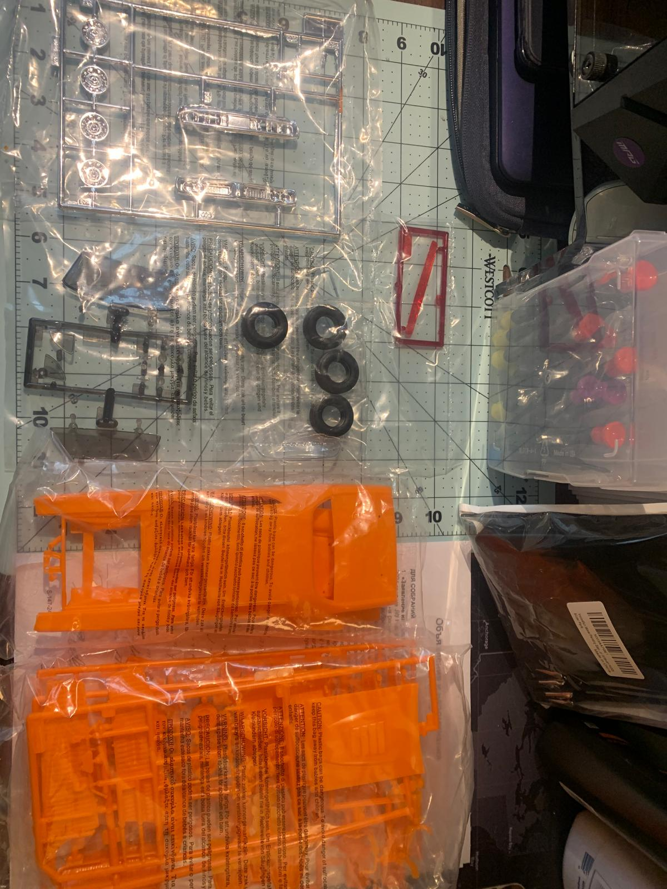
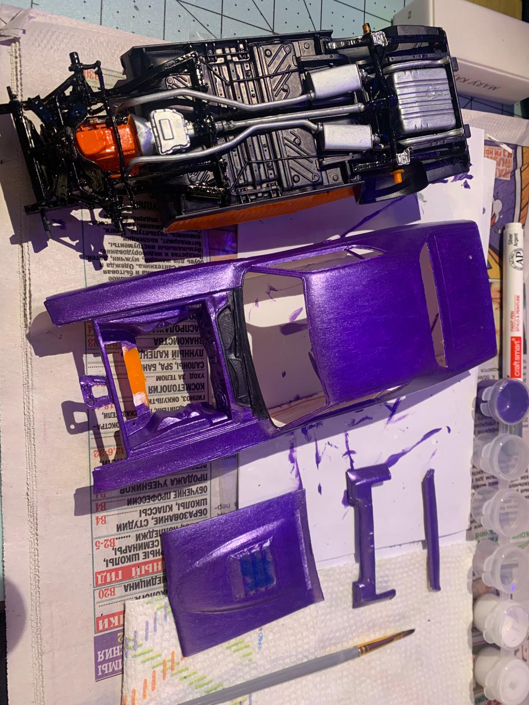
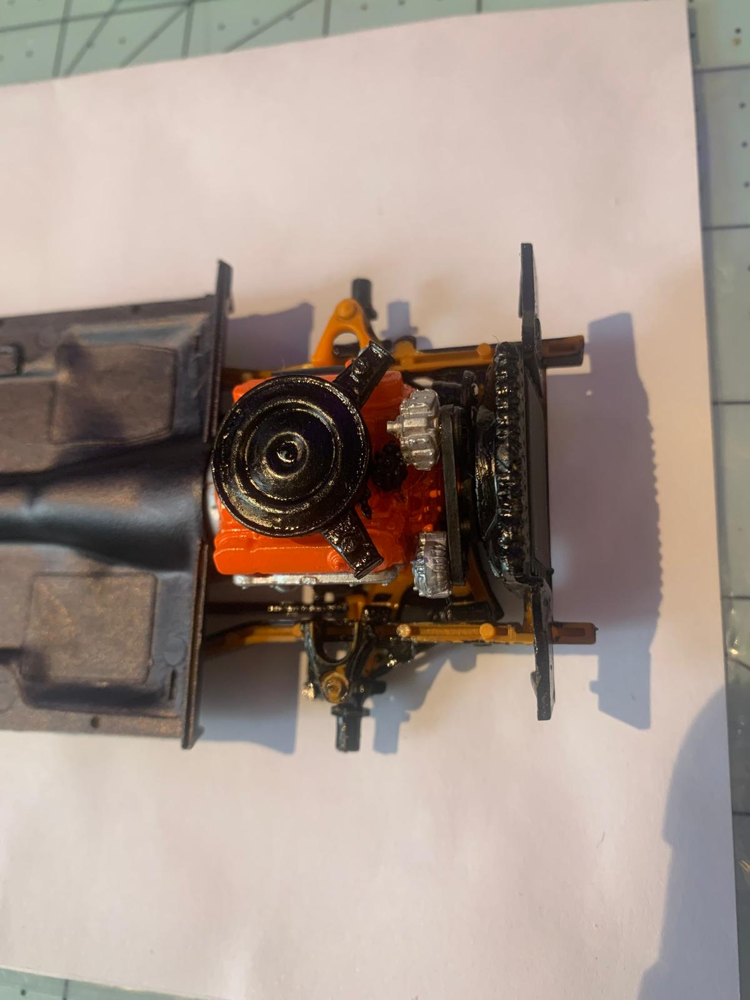
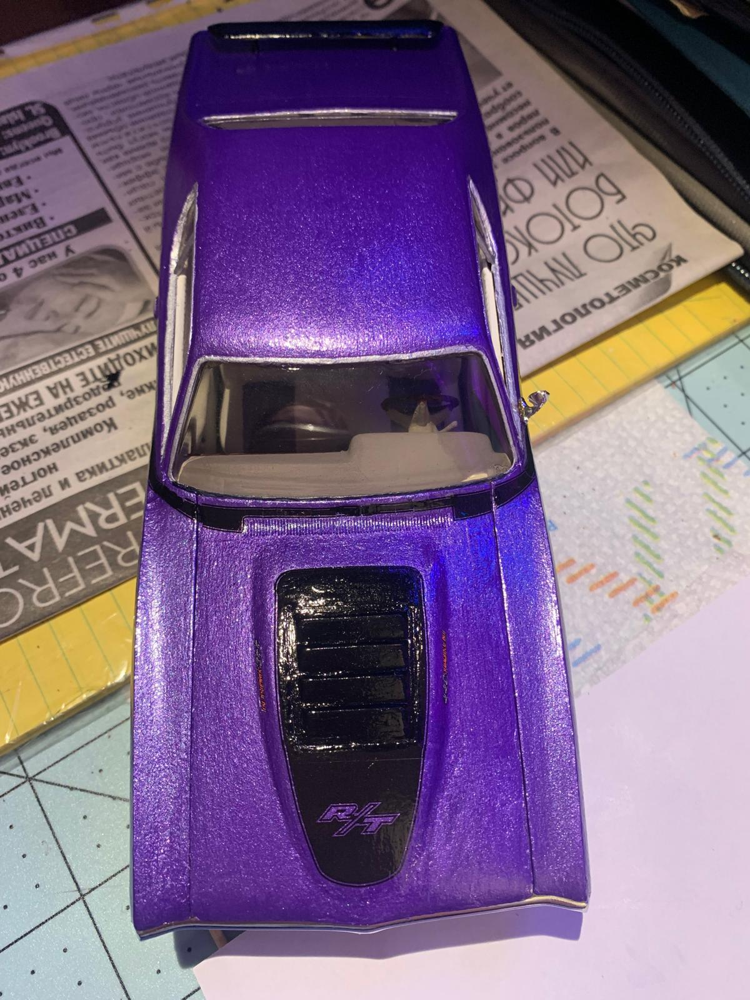
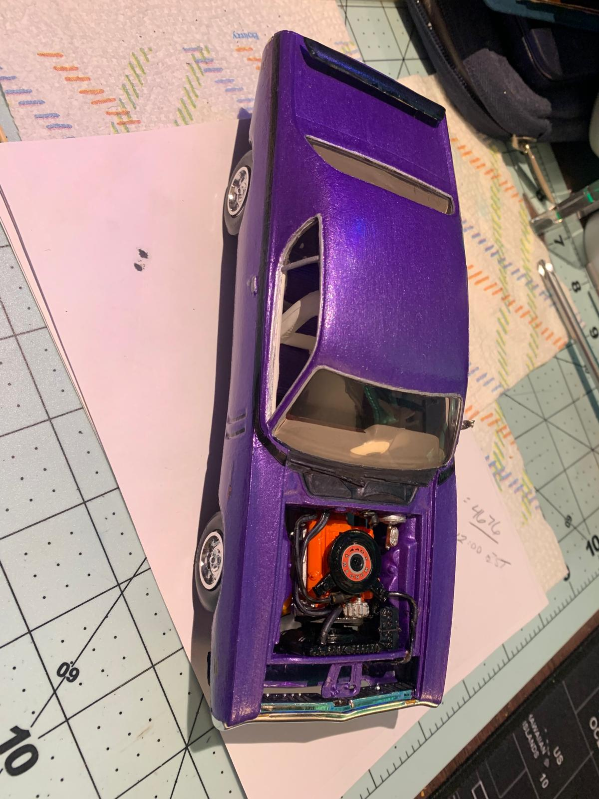

Plov is a traditional Uzbek dish that is made with rice, meat, and a variety of spices. It is a hearty and flavorful dish that is often served at special occasions and family gatherings. I enjoy cooking plov because it allows me to connect with my cultural heritage and share a delicious meal with my loved ones.





Building model cars is a hobby that I have enjoyed for many years. It allows me to work with my hands and create something tangible. I find it relaxing and rewarding to see the finished product after putting in the time and effort to assemble the parts. I also enjoy learning about the history and design of different car models as I build them.
Building computers is a hobby that I have recently taken up. It allows me to learn about the inner workings of technology and how different components work together to create a functioning machine. I enjoy the challenge of troubleshooting and problem-solving that comes with building a computer, and I find it satisfying to see the finished product up and running.